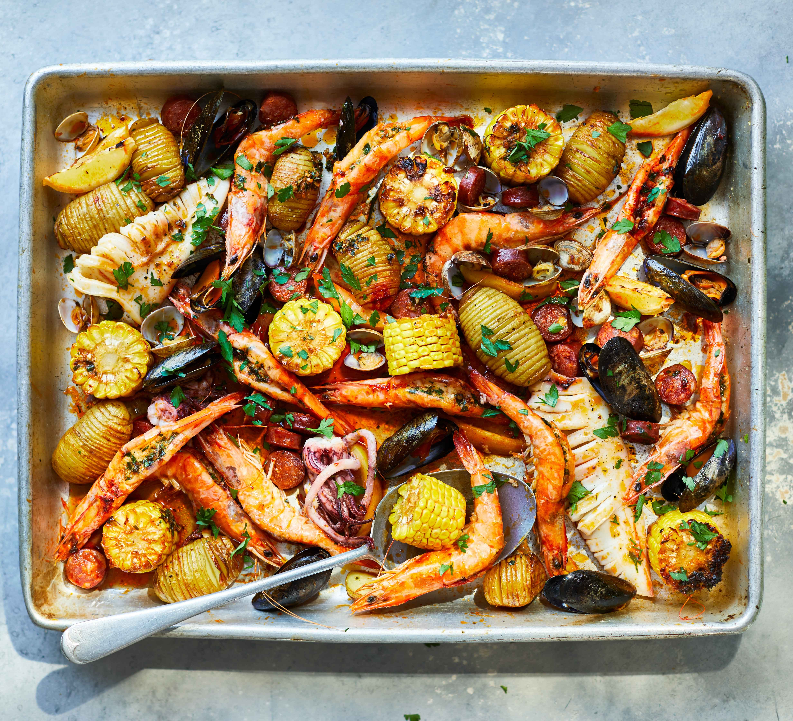

home seafood recipe

SEAFOOD Makes You Live 10 Years More!✩ Read this book for FREE on the Kindle Unlimited NOW! ✩Yepppp. That is the truth. So now, let's take a look at delicious recipes you can prepare at home in the book "150 Shellfish Boil Recipes" 150 Awesome Shellfish Boil RecipesWhen you're making changes to your diet, it's important to know why you have to eat less of some foods and more of others, especially if your goals are to lose weight and become healthier. If you understand the things about seafood that make them good for you, it becomes easier for you to add it to your regular diet. Here are the different reasons to eat seafood. Supplies nutrients your body needs Helps in weight loss Seafood makes you full for a long time Seafood is light on the tummy Seafood contains few calories Makes the heart healthier Keeps your brain protected Keeps depression at bay and treats it So why don't you eat Seafood immediately!I hope you enjoy the book "150 Shellfish Boil Recipes". You also see more different types of recipes such as: Risotto CookbookChutney RecipesScallop RecipesLobster RecipesDumpling RecipesMiso Soup RecipeShrimp Salad Recipes✩ DOWNLOAD FREE eBook (PDF) included FULL of ILLUSTRATIONS for EVERY RECIPES right after conclusion ✩I really hope that each book in the series will be always your best friend in your little kitchen.Let's live happily and eat seafood every day!Enjoy the book,
perparation of seafood
-
Add
avocado
bacon
baking sheet
- basil
beef
broth brown brown sugar
butter
- CALORIES
CARB
- carrots
cheese
chicken
CHOL
chopped fresh parsley
cilantro
cloves garlic
coat
combine
cook
corn
Cover
cream
cut
desired
diced
dip
dish
drained
eggs
evenly
FAT
FIBER
FIBER
- 2g CHOL
flour
freshly ground black
frozen
garnish
ground black pepper
IRON 1mg SODIUM
Kosher salt
large bowl
Lightly
medium
medium-high heat
melted
milk
minced
MINUTES TOTAL
mixture
mushrooms
needed
Note
onion
optional
ounces
packed
pasta
pepper to taste
pork chops
pound
powder
Preheat the oven
prepared
PROTEIN
recipe
rice
salad
salmon
salt and freshly
salt and pepper
sauce
season with salt
- Serve immediately
SERVES 4 PREPTIME
shrimp
side
slow cooker
small bowl
Sriracha
Stir
sugar
tablespoons chopped fresh
tablespoons olive oil
teaspoon dried
tender
thinly sliced
thyme
tomatoes
toss
vegetable
veggies
vinegar
whisk
yogurt
zucchini
back